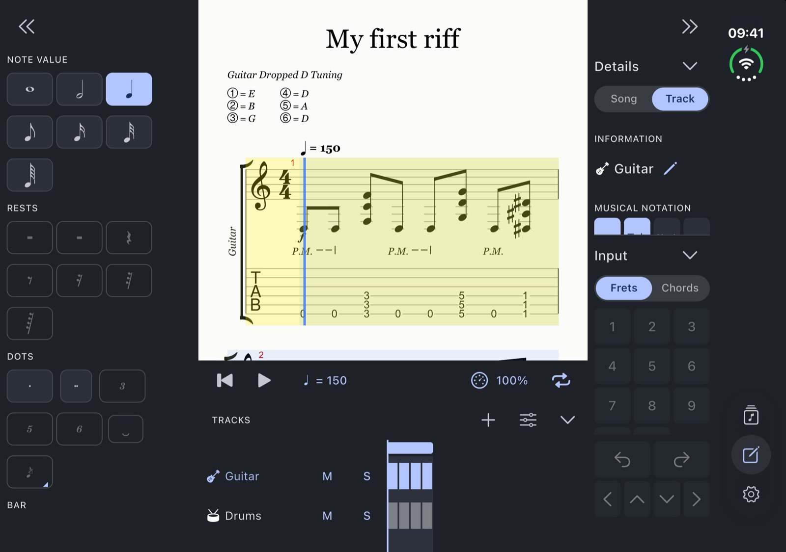
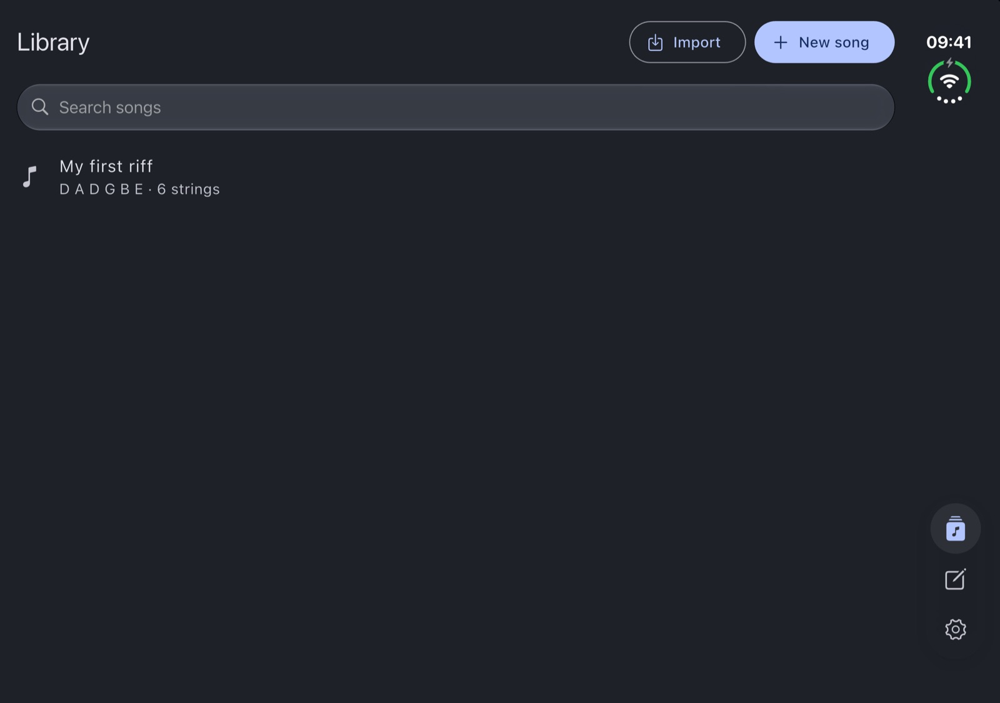
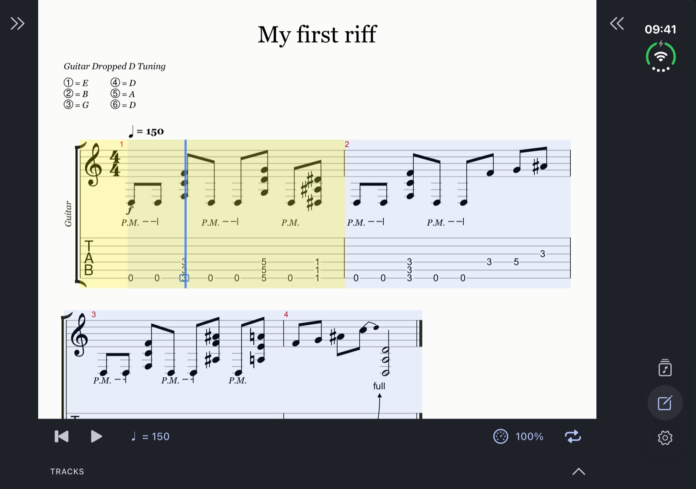
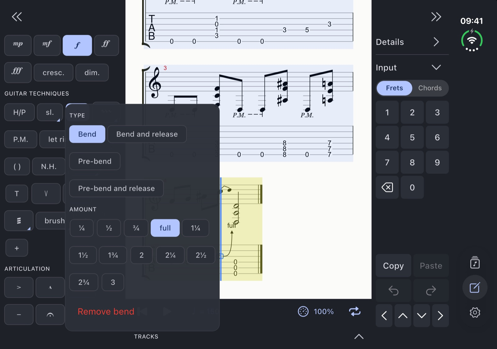
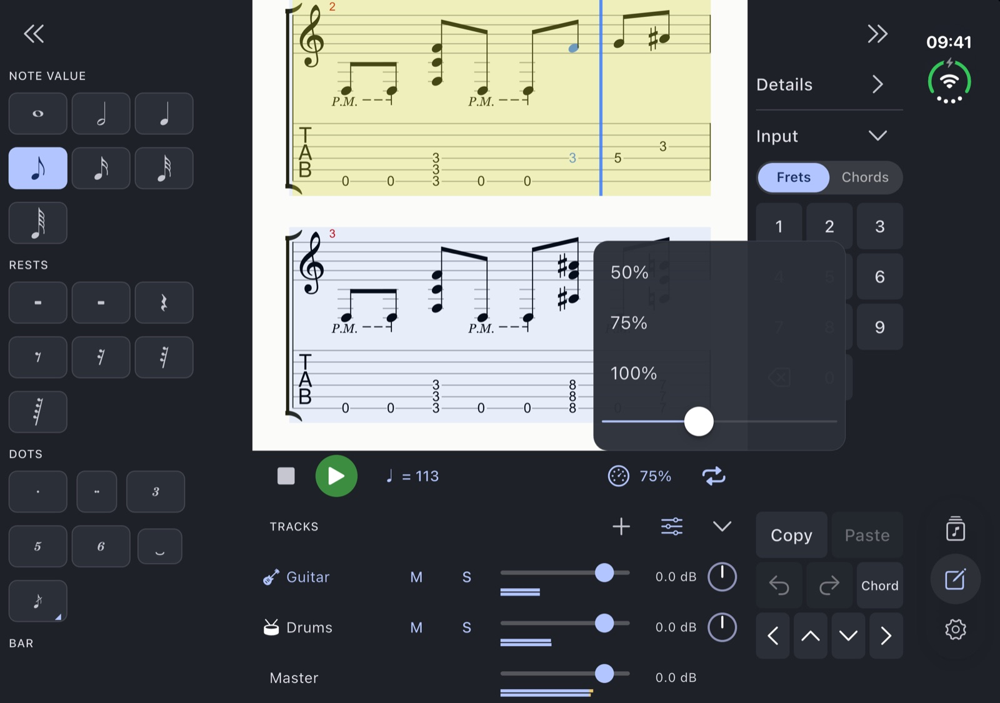
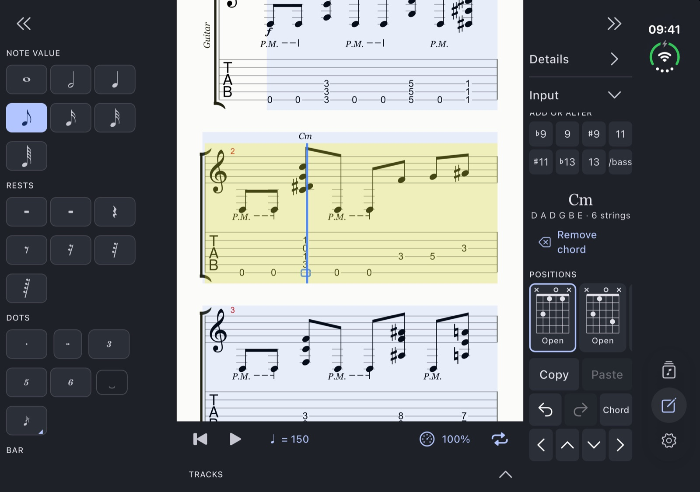
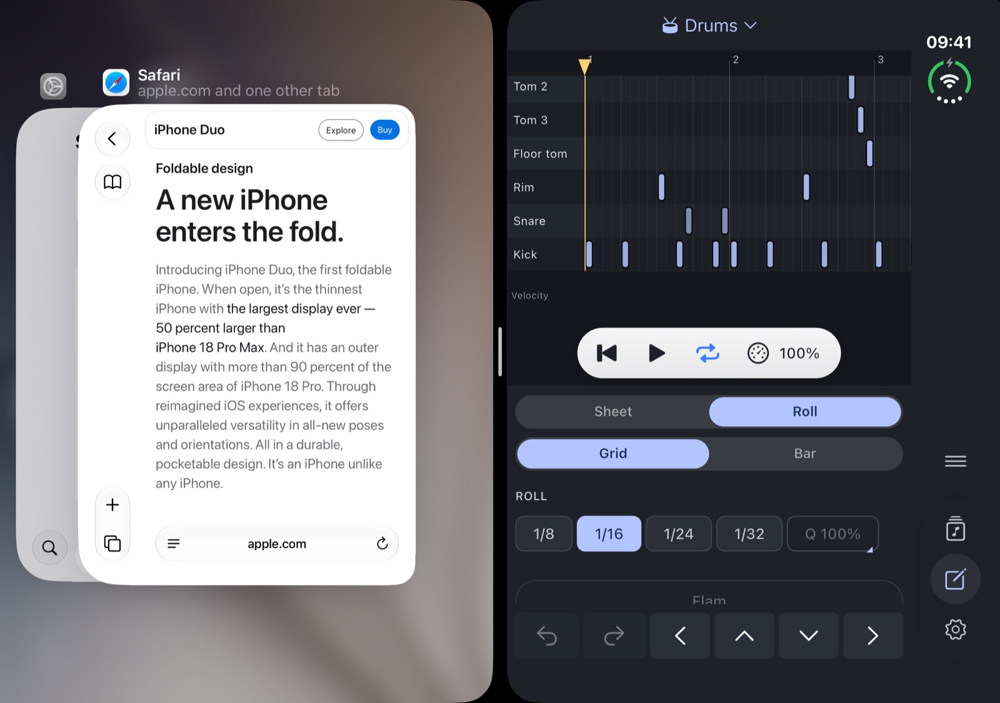
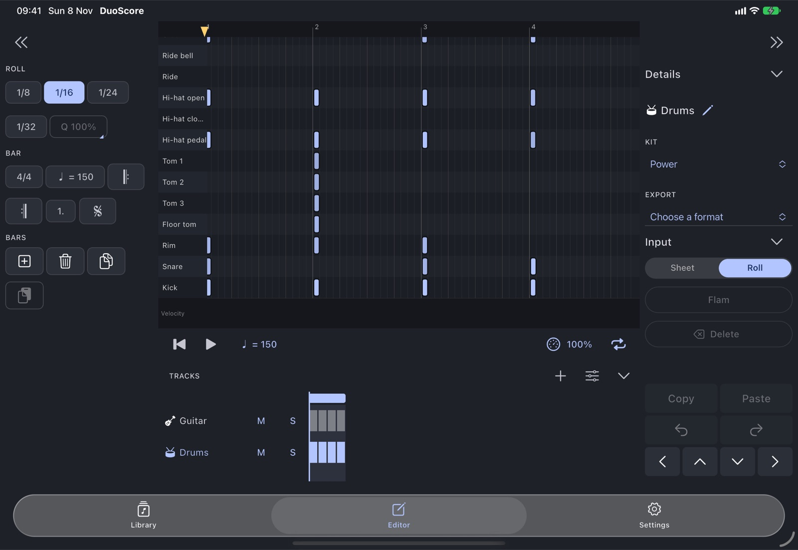
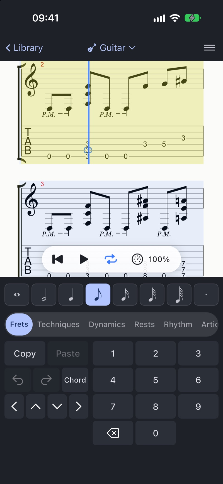

Smart fingering
MusicXML without tab? It gets frets.
Parts that arrive as notation only get strings and frets assigned automatically, in comfortable positions on the neck.
Write guitar, bass and drums on iPhone, iPad and iPhone Duo. See notation and tab together, hear every note and practise your way. Start a song from scratch, or open the files you already have.
Free for 7 days, then €9.99 once. No subscription, no ads, no account.

Start a song from scratch, or import Guitar Pro and MusicXML files from Files or straight from the share sheet. Each song shows its tuning and string count at a glance. New to DuoScore? A one-minute tour writes your first riff with you.

screens/library.png
Standard notation over tablature, laid out to use every inch of the screen, so you read more of the song and turn fewer pages. Each track can show standard notation, tab, slash or numbered notation, in any mix. Notation or tab always stays on.

screens/notation.png
Bends, slides, vibrato, whammy dives and tremolo picking sound the way a guitarist plays them: smooth and expressive, never stepped.
Every technique was tuned by ear. Bends reach the note quickly and hold it, and vibrato pushes the note upward.

screens/playback.png
Everything you need to work through a passage, and none of it touches your file.

screens/practice.png
Play anywhere from 25% to 150% of the written tempo, with one-tap shortcuts for the speeds you use most.
Select the bars you're stuck on and they repeat until you've got them.
Get a count-in before the music starts and a click to keep time with, at the volume you want.
Mute, solo and balance every track, then play your part over the rest of the band.
Write and change notes with an on-screen palette. Undo and redo as much as you like. Every change saves automatically, and plays the beat you're editing so you hear what you write.

screens/editing.png
Enter and change notes from the palette, with undo, redo and automatic saving. Each change plays the beat you're editing. Select a whole chord with one tap, and copy and paste a beat.
Add, remove, reorder and rename tracks. New songs start from instrument cards: guitar, bass or drums.
Edit bars, time signatures and repeats, plus the song's title and artist.
Each in its variants, written from the palette.
Paint drum parts with your finger on a grid with one row per kit piece, then hear every hit as you place it. The sheet shows them in standard drum notation.
Kick, snare, toms, hi-hats, ride, crashes, splash, china and rim, on a 1/8, 1/16, 1/24 (triplet) or 1/32 grid.
Paint with a finger, select, erase, copy and paste, and add a Flam.
A velocity lane for every hit, and timing off the grid for a human feel. Quantize strength runs from 0 to 100%, plus a Q button.
Drag notes and they follow your finger. Overlap them freely.
Scroll and zoom with two fingers. Tap the ruler to move the song cursor anywhere, or drag the playhead.
Hits play as you paint them, and the sheet shows them in standard drum notation.
Send a drum part to Logic as MIDI, or bring one in with a preview first, on the Modern & Massive 2 or General MIDI map.
Bass tracks get their own tunings, clef, sounds and chord shapes, not a guitar in disguise.
Build chord symbols with a few taps, then get playable positions for the track's tuning, on guitars with 7 or 8 strings too.
Root, type, additions and slash bass: tap each to build the symbol.
Get up to four playable positions per region of the neck for the track's tuning, including guitars with 7 or 8 strings.
Chords are named as you write, the way a chord finder does, or suggested for you.
Every track has its own base sound plus effects, on top of a carefully calibrated mix. Drums and bass included.
Each track has one, plus effects.
A room, compressor and limiter on the master. The overall sound was calibrated against reference exports of seven songs.
Sounds stored in .gp files are read, played where the song switches them, and saved back.
11 drum kits to choose from.
Switch a track's sound at any bar. Build a sound from a base and effects, and see every switch as a ▾ mark in the track list.
Change a track's tuning or string count, from Eb to E standard or from 6 to 7 strings. Keep the sound and the notes move to new frets. Keep the frets and the shapes you play stay the same. Notes that can't be played are flagged. It works for bass too, and for guitars with 7 or 8 strings.
Parts that arrive as notation only get strings and frets assigned automatically, in comfortable positions on the neck.
Share a song as a Guitar Pro file, as a clean A4 PDF with title, tempo, tuning, notation over tab and page numbers (the full score with every track, or one track), or as MIDI with every track for Logic. Export from inside the song or straight from the library. The exported file keeps your chord names, each track's sounds, and DuoScore's exact drum velocities and timing.
DuoScore launches on iPhone, iPad and iPhone Duo at the same time, each with a layout designed for it, not stretched to fit it.

screens/splitview.png

screens/ipad.png

screens/iphone.png

DuoScore is coming to iPhone, iPad and iPhone Duo. Free for 7 days, then €9.99 once.